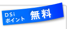
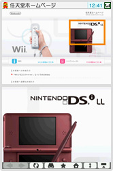
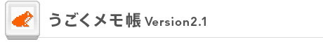
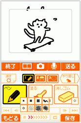
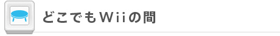
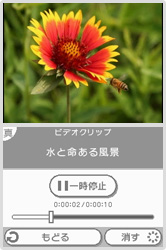

まずは、無料で利用できるお役立ちDSiウェアをご紹介！ ネットサーフィンを楽しんだり、DSiをメモ帳にしたり、好きな映像を外出先で視聴できたりと、実にさまざまな機能を追加できます。せっかくの無料ツール、これを使わない手はない!?


ウェブサイトを気軽に閲覧
ブログや掲示板、そして検索など、インターネット上にあるさまざまなウェブサイトを楽しめます。２画面表示を活かした拡大機能や、タッチペンを使った操作感はDSiならでは。さらに、DSi LLなら、より大きな画面で見ることができます。
もちろん、無線LANの電波が届くところなら、リビングや寝室、喫茶店や空港といった外出先でもインターネットに接続可能。あらかじめ普段よく見るホームページなどをお気に入りに登録しておけば、いつでもすぐにDSiを取り出して確認することができます。
また、有料のフィルタリングソフト『i-フィルター』を導入すれば、危険な有害サイトをブロックしてくれます。これで、お子さんが使う場合でも安心です。
©1995-2008 Opera Software ASA. ©2008 Nintendo.


友達とのメモ交換もできる
タッチペンやカメラ、そしてマイクを利用して、DSi / DSi LLをメモ帳やスケジュール帳として使えるようになるソフトです。メモはカレンダーの中に日付単位で保存され、指定した日時がくるとお知らせしてくれます。
また、複数のメモを連続で再生させると、パラパラマンガのような「うごメモ」を作れます。インターネットに接続すれば、このうごメモを掲示板サイト『うごメモシアター』に公開したり、他の人のうごメモを見て、面白い作品に☆をつけたりと、たんなるメモ帳とはひと味違った楽しみ方ができます。公開されたうごメモを自分のDSiにダウンロードして再編集し、自分のうごメモとして再公開することも可能です。
さらに、うごメモシアター上でお友達（＝うごメイト）と「うごレター」のやり取りができるので、うごメモを使ったメールソフト、コミュニケーションツールとして活用することもできます。
©2008-2009 Nintendo


いつでもどこでも好きな映像を
Wiiチャンネル『Wiiの間』で配信されている映像を、DSi本体に転送して、再生できるようにしてくれるソフトです。
SDメモリーカードに保存しておくこともできるので、大容量のカードを複数枚用意して、『Wiiの間』のお気に入りの映像をたくさん転送しておけば、遠方への旅行や長い移動のある出張でも使えます。
また、『Wiiの間』パートナー企業が提供する「ビデオクーポン」をWiiで受信して、DSiの『どこでもWiiの間』へ転送し、対象となる店舗に持っていくと、さまざまな特典を受けることもできます。お得な情報を逃さないよう、Wiiを起動した際には『Wiiの間』も確認してみてください。
©2009 Nintendo